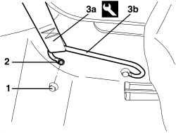
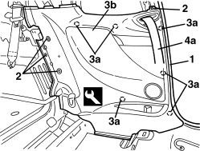
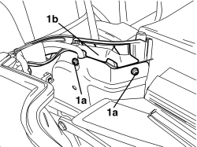
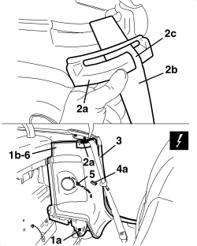

7040H50 REAR PANEL (ONE), LEFT OR RIGHT - R.R
- Path
- Procedures > 70 FITTINGS > 7040 BODY INTERIOR FITTINGS AND TRIM > 7040H ROOF PANEL AND PILLARS LINING > 7040H50 REAR PANEL (ONE), LEFT OR RIGHT - R.R
- Kind
- repair procedure (removal / refitting; the operation number is the code)
- Applies to
- all engines; all production periods
- Interactive page
- https://sloeber94.github.io/elrnDB-aBrrSpdr/en/#/946002636
Applies to: all engines; all production periods
 Removing
Removing
 Refitting
RefittingOp. 7040H38 CENTRE PILLAR UPPER ELEMENT (ONE), LEFT OR RIGHT - R.R
- If working on the left side, remove the courtesy light.
Op. 7040G30 BOOT LIGHT BULB HOLDER - R.R.
Op. 7050A22 REAR SEAT CUSHION - R+R
Op. 7040H42 REAR PILLAR TRIM (ONE), LEFT OR RIGHT- R.R
Op. 7050A15 SPLIT REAR SEAT RIGHT BACKREST - R.R.
- If necessary.
Op. 7050A13 SPLIT REAR SEAT LEFT BACKREST - R.R.
1. Release the trim cover.
2. Undo the bolt.
3. Disconnect end (3a) of the front seat belt from bracket (3b).

Applies to: all engines; all production periods
1. Release the door housing seal in the area of the side panel.
2. Undo the bolts.
3. Release the inner retainers (3a) using the special tool and remove the side panel (3b).
Tool | Description | Function | Validity |
|---|---|---|---|
1823015000 | Knife | Retainer removal |
4. Release seat belt (4a) and recover side panel (3b).

Applies to: all engines; all production periods
Refitting
Removing- Check that the side panel is not damaged.
- Fit the seat belt to the side panel
- Position the side panel and attach the inner retainers.
- Tighten the bolts.
- Fit the door housing seal.
- Connect the end of the front seat belt to the bracket.
- Avvitare la vite e impegnare il coperchietto di finitura.
Op. 7050A13 SPLIT REAR SEAT LEFT BACKREST - R.R.
Op. 7050A15 SPLIT REAR SEAT RIGHT BACKREST - R.R.
Op. 7040H42 REAR PILLAR TRIM (ONE), LEFT OR RIGHT- R.R
Op. 7050A22 REAR SEAT CUSHION - R+R
Op. 7040G30 BOOT LIGHT BULB HOLDER - R.R.
Op. 7040H38 CENTRE PILLAR UPPER ELEMENT (ONE), LEFT OR RIGHT - R.R
Applies to: engines: 2.2 JTS, 3.2 JTS; all production periods; only with equipment: Spider
Removing
Refitting- Prepare the hood for the operation.
Op. 0010T79 HOOD HYDRAULIC SYSTEM - DISCHARGE AND RESTORE PRESSURE
- Place the entire hood inside the housing compartment and place the hood housing cover in the fully raised position using the electric control.
Op. 7040H21 MOULDING ON PASSENGER COMPARTMENT REAR TRIM - R.R.
Op. 7040H22 PASSENGER COMPARTMENT REAR TRIM (SPIDER) - R.R.
Op. 7040L31 REAR ODDMENTS COMPARTMENT - R.R.
Op. 7040L51 REAR ODDMENTS COMPARTMENT SUPPORT - R.R.
1. Working on the hood housing side, undo the bolts (1a) fixing the rear panel (1b).

Applies to: engines: 2.2 JTS, 3.2 JTS; all production periods; only with equipment: Spider
1. Undo the lower bolt (1a) for the rear panel (1b).
2. Release the trim (2a) for the seat belt from its housing, then remove it passing the seat belt (2b) through the slot (2c).
3. Release the door housing seal in the area of the rear panel.
4. Move the rear panel (1b) slightly and release the inner retainer (4a).
5. Disconnect the rear speaker electrical connection.
Description | Component |
|---|---|
LEFT REAR SPEAKER | |
RIGHT REAR SPEAKER |
6. Keep the panel assembly.

Applies to: engines: 2.2 JTS, 3.2 JTS; all production periods; only with equipment: Spider
If necessary, remove the following components.
Op. 5570T93 REAR SIDE LOUDSPEAKER. (ONE), LEFT OR RIGHT - R.R. WITH REAR DOOR PANEL OR WING. REMOVED
Op. 7040H54 GRILLE FOR SPEAKER IN REAR SIDE PANEL (ONE), LEFT OR RIGHT - R.R.
Op. 7040H53 MOULDING ON REAR SIDE PANEL (ONE), LEFT OR RIGHT - R.R.
Applies to: engines: 2.2 JTS, 3.2 JTS; all production periods; only with equipment: Spider
Refitting
Removing- Check that the rear side panel is not damaged.
Op. 7040H53 MOULDING ON REAR SIDE PANEL (ONE), LEFT OR RIGHT - R.R.
Op. 7040H54 GRILLE FOR SPEAKER IN REAR SIDE PANEL (ONE), LEFT OR RIGHT - R.R.
Op. 5570T93 REAR SIDE LOUDSPEAKER. (ONE), LEFT OR RIGHT - R.R. WITH REAR DOOR PANEL OR WING. REMOVED
- Connect the rear speaker electrical connection.
- Position the panel assembly and attach the inner retainer.
- Fit the door housing seal.
- Attach the trim to the seat belt passing it through the slot, then attach the actual trim in place.
- Tighten the lower bolt for the rear panel.
- Working on the hood housing side, tighten the bolts fixing the rear panel.
Op. 7040L51 REAR ODDMENTS COMPARTMENT SUPPORT - R.R.
Op. 7040L31 REAR ODDMENTS COMPARTMENT - R.R.
Op. 7040H22 PASSENGER COMPARTMENT REAR TRIM (SPIDER) - R.R.
Op. 7040H21 MOULDING ON PASSENGER COMPARTMENT REAR TRIM - R.R.
- If discharged, restore the hood hydraulic system pressure.
Op. 7030H03 HOOD MANUAL OPENING FOLLOWING DEACTIVATION OF HYDRAULIC SYSTEM - CARRY OUT PROCEDURE
- Close the hood using the electric control.
Topics linked from this page (17)
- 0010T79 HOOD HYDRAULIC SYSTEM - DISCHARGE AND RESTORE PRESSURE
- 5570T93 REAR SIDE LOUDSPEAKER. (ONE), LEFT OR RIGHT - R.R. WITH REAR DOOR PANEL OR WING. REMOVED
- 7030H03 HOOD MANUAL OPENING FOLLOWING DEACTIVATION OF HYDRAULIC SYSTEM - CARRY OUT PROCEDURE
- 7040G30 BOOT LIGHT BULB HOLDER - R.R.
- 7040H21 MOULDING ON PASSENGER COMPARTMENT REAR TRIM - R.R.
- 7040H22 PASSENGER COMPARTMENT REAR TRIM (SPIDER) - R.R.
- 7040H38 CENTRE PILLAR UPPER ELEMENT (ONE), LEFT OR RIGHT - R.R
- 7040H42 REAR PILLAR TRIM (ONE), LEFT OR RIGHT- R.R
- 7040H53 MOULDING ON REAR SIDE PANEL (ONE), LEFT OR RIGHT - R.R.
- 7040H54 GRILLE FOR SPEAKER IN REAR SIDE PANEL (ONE), LEFT OR RIGHT - R.R.
- 7040L31 REAR ODDMENTS COMPARTMENT - R.R.
- 7040L51 REAR ODDMENTS COMPARTMENT SUPPORT - R.R.
- 7050A13 SPLIT REAR SEAT LEFT BACKREST - R.R.
- 7050A15 SPLIT REAR SEAT RIGHT BACKREST - R.R.
- 7050A22 REAR SEAT CUSHION - R+R
- P030 LEFT REAR SPEAKER
- P031 RIGHT REAR SPEAKER
Topics that link to this page (14)
- 5570T96 REAR SIDE SPEAKER (ONE), LEFT OR RIGHT- R.R
- 5580C40 SIDE BAG SENSOR (ONE), LH OR RH - R.R.
- 5580C50 WINDOW BAG MODULE (ONE) LH OR RH - R.R
- 5580H10 PARKING OBSTACLE DETECTION DEVICE ELECTRONIC CONTROL UNIT - R.R.
- 7030H14 HOOD - R.R.
- 7035C14 FIXED REAR SIDE WINDOW (ONE) LEFT OR RIGHT - R.R INCLUDES CLEANING HOUSING
- 7040H51 ODDMENTS POCKET ON REAR SIDE PANEL (ONE), LEFT OR RIGHT - R.R.
- 7040H53 MOULDING ON REAR SIDE PANEL (ONE), LEFT OR RIGHT - R.R.
- 7040H54 GRILLE FOR SPEAKER IN REAR SIDE PANEL (ONE), LEFT OR RIGHT - R.R.
- 7040H55 COVER ON REAR SIDE PANEL (ONE), LEFT OR RIGHT - R.R.
- 7040L10 PASSENGER COMPARTMENT FLOOR COVERING - R.R.
- 7065A12 FRONT SEAT BELT (ONE), LEFT OR RIGHT, WITH PRETENSIONER ON REEL - R.R
- 7065A19 IDLER SUPPORT FOR FRONT SEAT BELT (ONE), LEFT OR RIGHT - R.R.
- 7210B71 BACKREST REAR PARTITION - R.R.